Universidad de Chile
Formación académica en percusión clásica, música de cámara y música contemporánea (1999-2005).
Contexto
La formación académica de Cristóbal Zurita se desarrolló en la cátedra de percusión clásica de la Universidad de Chile entre 1999 y 2005, bajo la tutela de la profesora Elena Corvalán. Durante este período participó en recitales, exámenes, cursos de cámara y estrenos de música contemporánea.
El material documental incluye programas de concierto, registros fotográficos y certificados de alumno regular. Estos documentos permiten reconstruir una etapa fundacional que sentó las bases técnicas y estéticas para su trabajo posterior.
Áreas de formación documentadas
- Percusión clásica (técnica, repertorio orquestal y solista)
- Música de cámara (conjuntos de percusión)
- Música contemporánea (estrenos y festivales)
- Recitales de título y exámenes de ópera
Programas y recitales
Documentos de exámenes, recitales y conciertos de cámara
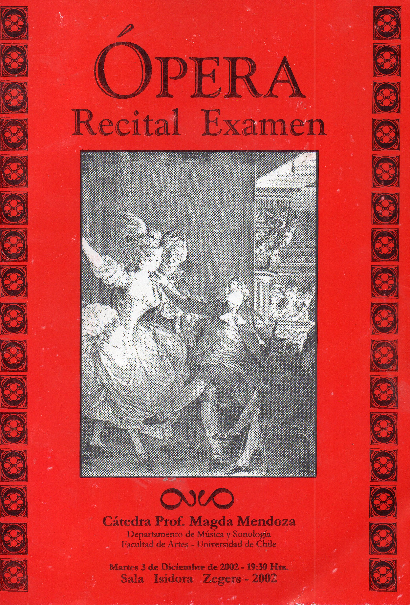
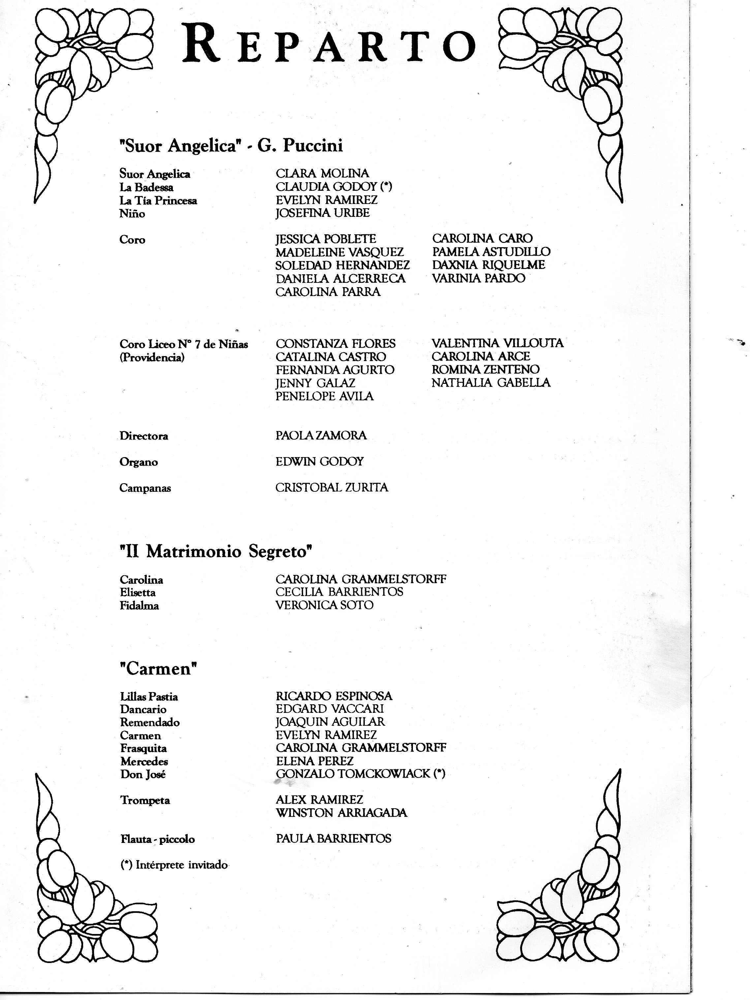
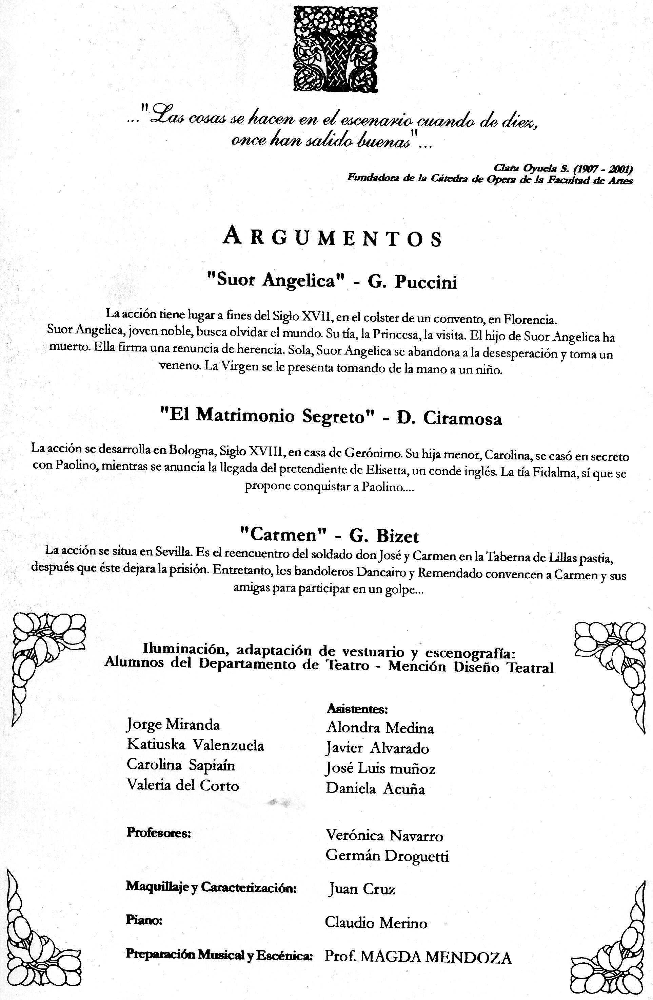

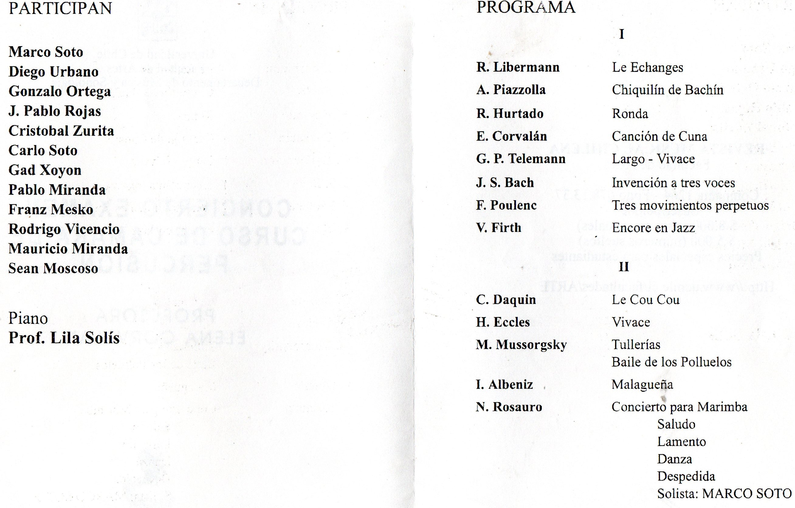

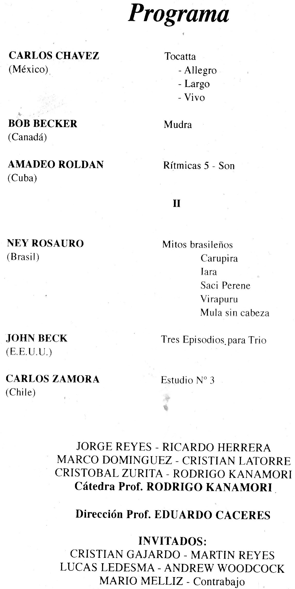
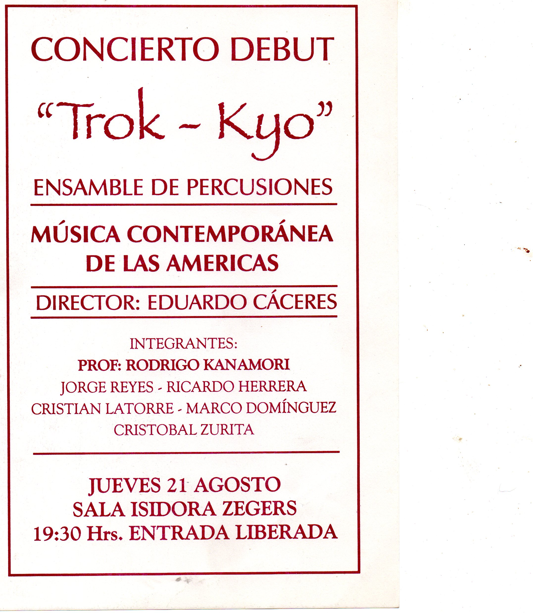

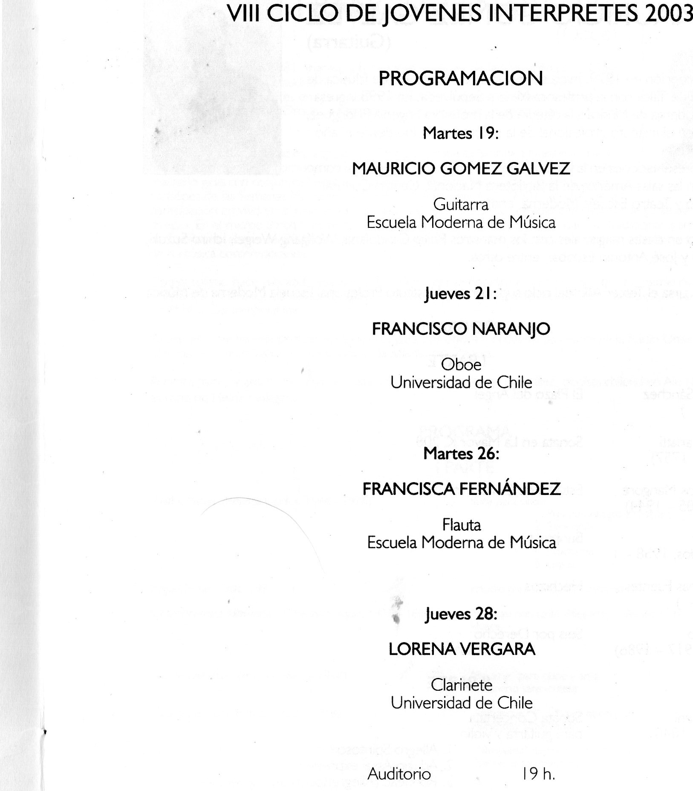
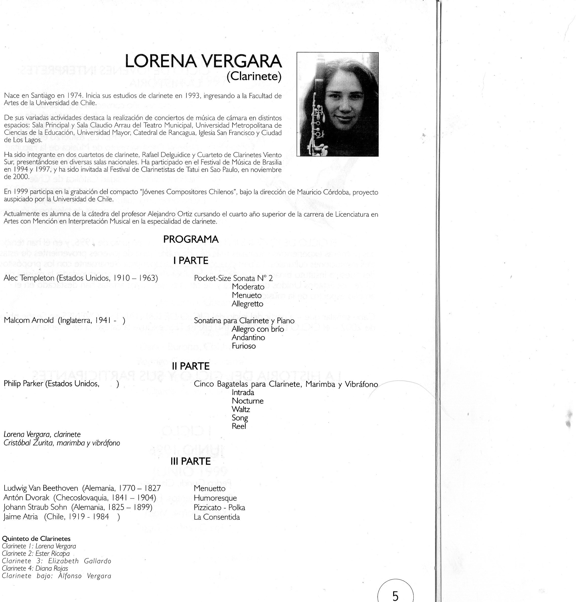

Registros fotográficos
Imágenes de conciertos y ensayos en la Universidad de Chile
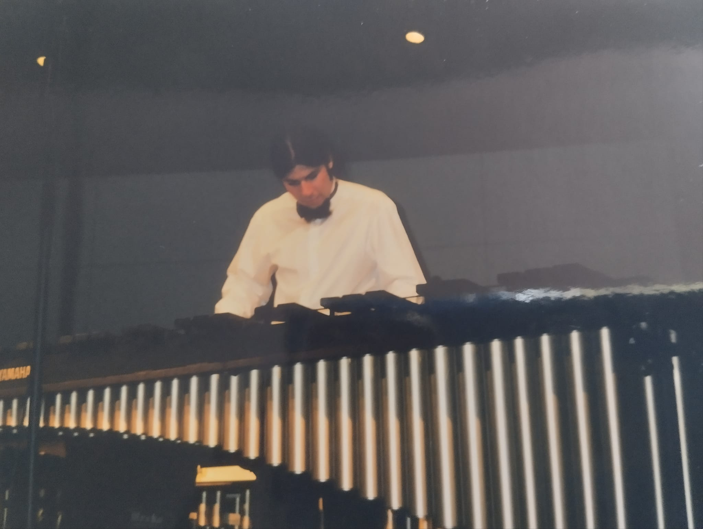
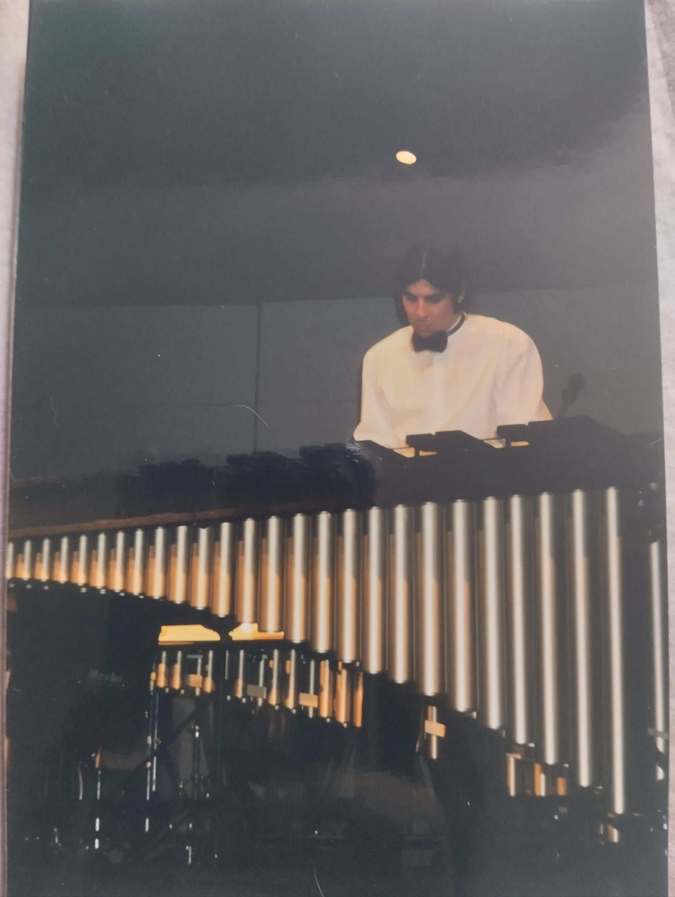
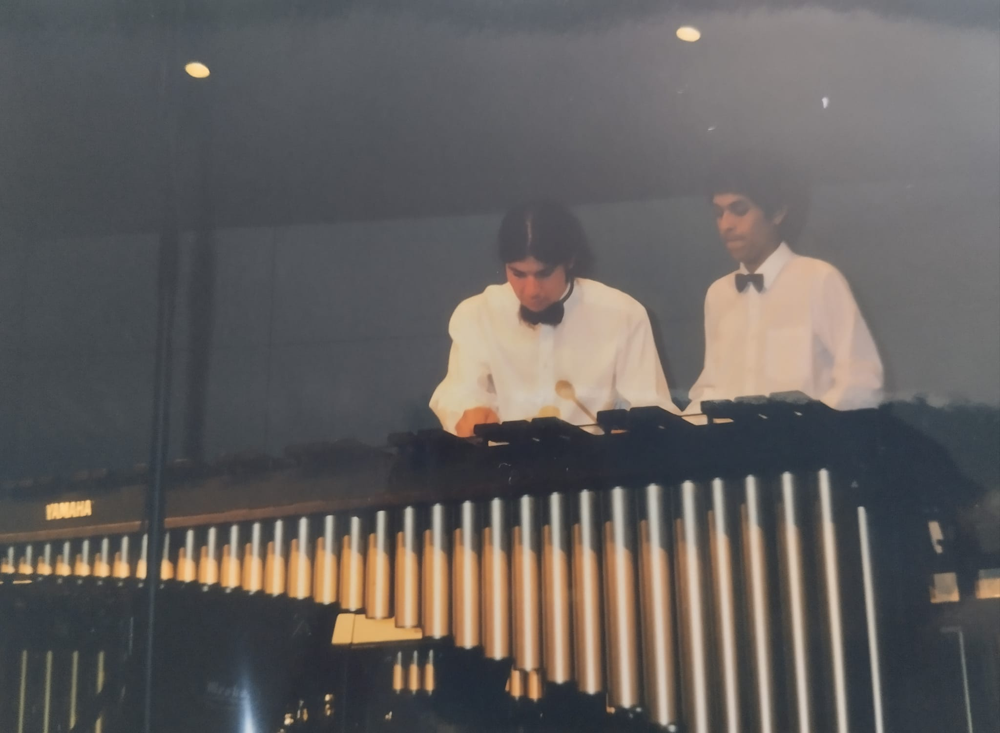
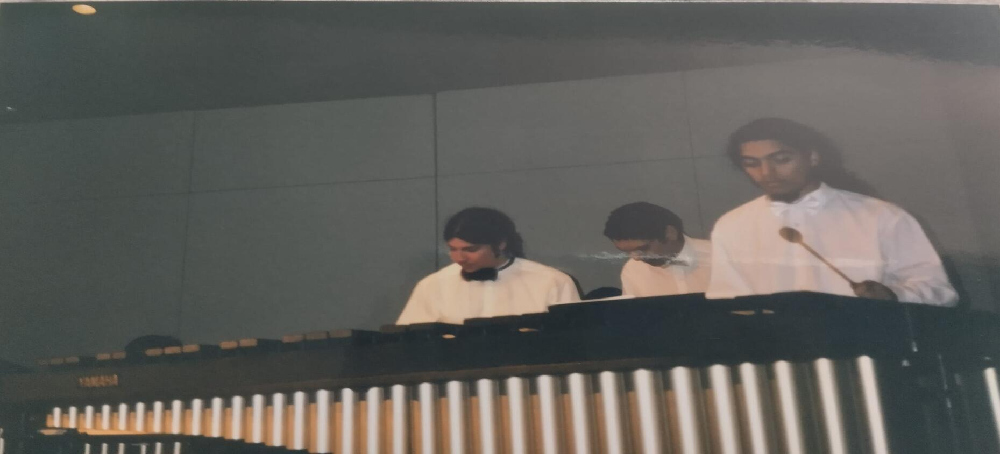
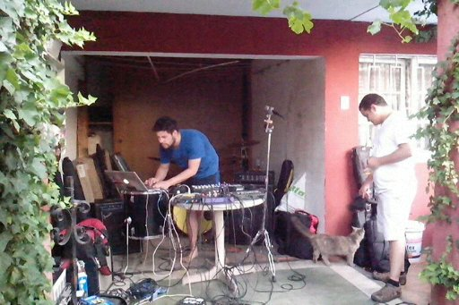
Certificados